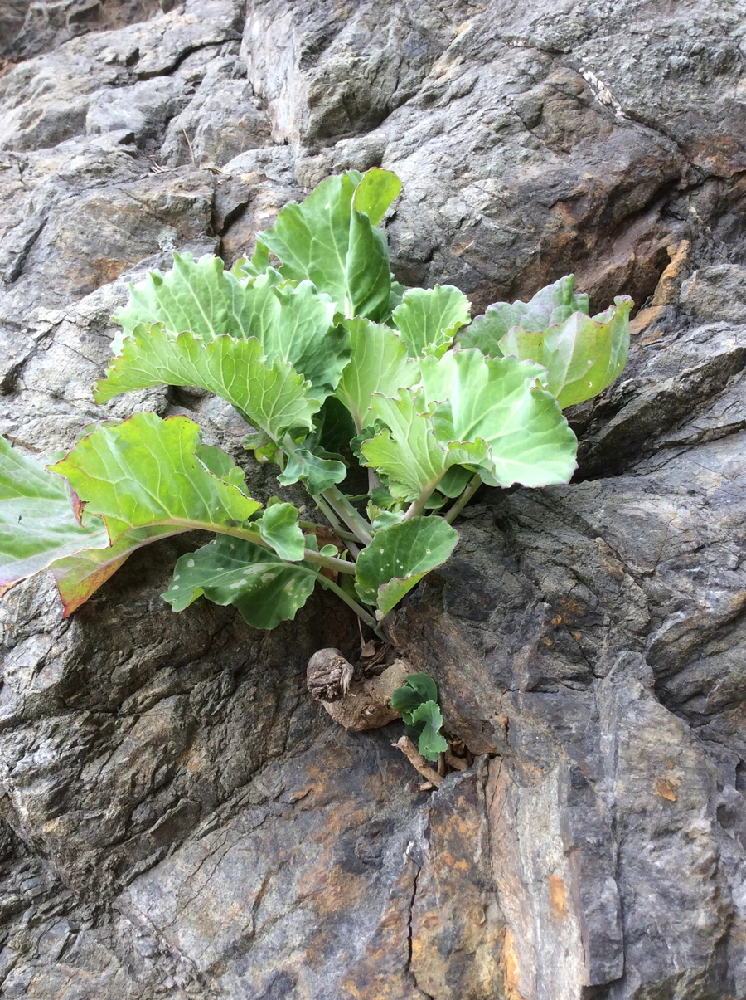

农作物与经济植物 · 植物界
甘蓝 Brassica oleracea

甘蓝的叶球紧实，是常见的叶菜，可炒食、做馅和腌制，同一物种还演化出花菜、西兰花等多个变种。
- 分类
- 门被子植物门纲双子叶植物纲目十字花目科十字花科属芸薹属
- 栖息环境
- 温带与亚热带的菜地，喜凉爽、光照充足，耐寒性较强
- 地理分布
- 原产欧洲地中海沿岸，现世界各地广泛栽培，中国各地均种植
- 保护级别
- 暂无评估（栽培作物）
物种志
甘蓝是十字花科一二年生草本，株高 0.3–0.6 m。基生叶大而厚，表面有蜡粉，外层叶片绿色或紫红色，心叶层层抱合成紧实的叶球。叶片呈圆形或扁圆形，叶脉明显。花为总状花序，黄色，四瓣十字形，但栽培上多用种子繁殖。甘蓝的叶球有圆球、扁球等形状。
甘蓝原产欧洲地中海沿岸，栽培历史已有 4000 多年，是西方最重要的蔬菜之一，后传入中国。它喜凉爽、光照充足，耐寒性较强，适宜在疏松肥沃、排水良好的土壤中种植。叶球可炒食、做馅、做汤、腌制酸菜，也可加工成脱水蔬菜。甘蓝富含维生素 C、维生素 K 和膳食纤维。值得一提的是，花菜、西兰花、抱子甘蓝、羽衣甘蓝等都是甘蓝的栽培变种，同一物种演化出形态各异的蔬菜。中国各地均有栽培。
形态与习性
- 株高0.3–0.6 m
- 叶大而厚，表面有蜡粉
- 叶球圆形或扁圆形，紧实
- 繁殖种子繁殖
- 用途炒食、做馅、腌制酸菜
- 变种花菜、西兰花、羽衣甘蓝等
趣味知识
- 花菜、西兰花、抱子甘蓝其实都是甘蓝的栽培变种。
- 甘蓝的叶球由心叶层层抱合而成，外层绿叶保护内部。
- 甘蓝原产地中海沿岸，后传入中国，成为常见蔬菜。